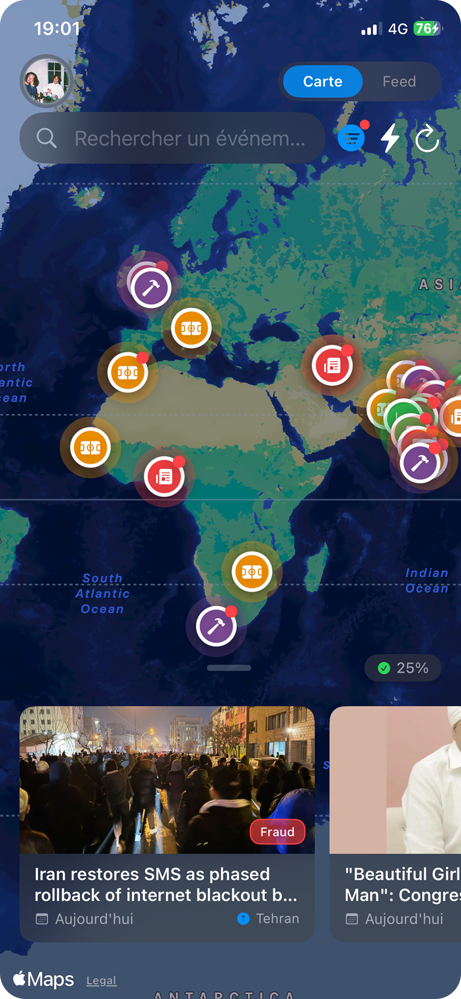

Découvrez l'actualité disposée sur une carte et profitez d'un feed immersif façon TikTok.
Télécharger sur l'App StoreL'info qui vous entoure, en un clin d'œil.
Découvrez l'actualité disposée sur une carte et profitez d'un feed immersif façon TikTok.
Télécharger sur l'App Store